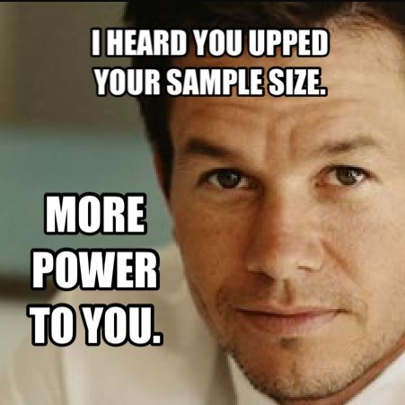

I received a BA in Anthropology from New York University in 2013 where I studied Medical Anthropology and a biocultural approach to understanding disease experience and treatment. My work there sparked an interest in research that uses a mix of quantitative and qualitative methods, and in harnessing data to solve complex, interdisciplinary problems.
I am currently a research assistant for the EcoHealth Alliance Data Science and Technology team, where we seek to understand and assess gaps in surveillance, and plan tools and technologies to bridge these gaps with the goal of minimizing delay between disease emergence and detection. At EcoHealth, my work focuses on the assessment and application of digital tools to detect and analyze emerging infectious disease threats before they reach epidemic levels, particularly by finding structured information in nontraditional data sources like news feeds. I assist in design, development, testing, and validation of the Data Science and Technology team’s software projects, as well as conducting research to inform the team’s work.
I am currently pursuing an M.S. in Biostatistics at Columbia University’s Mailman School of Public Health. There, I have worked on various data anlaysis projects, including infectious disease modeling prejects and regression analysis. Visit the Projects Page to view my latest work.
My full CV is available here.
Karissa Whiting EcoHealth Alliance 460 West 174th Street, Apt. 1H New York, NY 10001
Email:karissa.whiting@gmail.com Phone: seven one six eight six eight four two seven seven